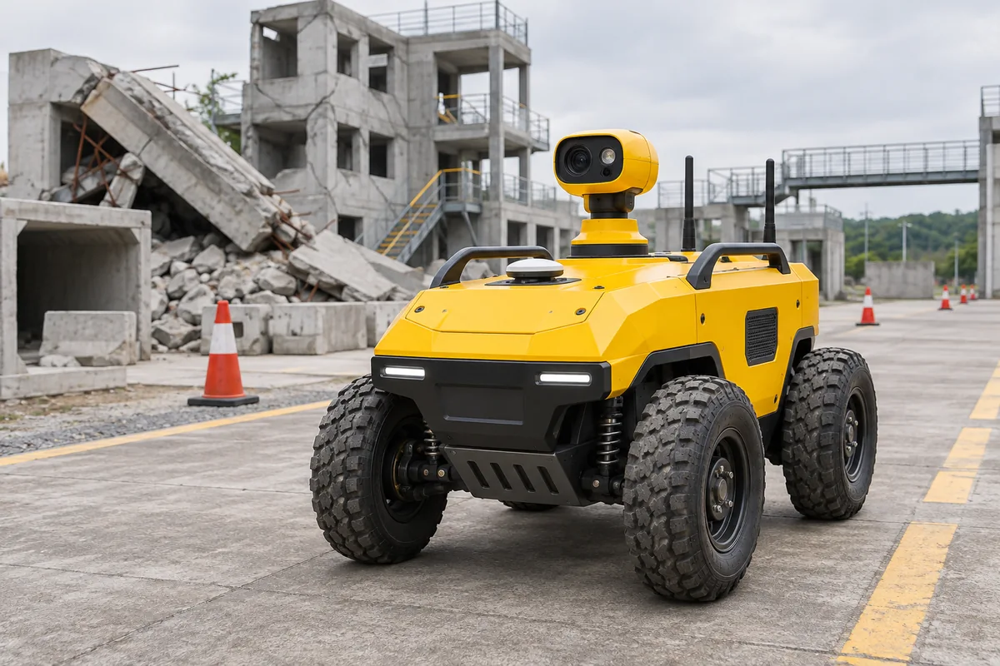

沿主通道完成 A、B
按计划巡检 · 预期覆盖 2/2
观测与地图一致，依次检查两点，各形成带时间戳的记录。
复杂系统工程 2026 · 作业 1
用震后通道巡检推演，连接六层架构、感知行动闭环与验证证据。
许可区域内 A、B 两处通道点位。
指挥员批准范围与恢复，救援班组复核成果。
通行报告、证据索引及未覆盖点位与原因。
路线、覆盖数和播放过程均为教学推演。实物测试与班组确认待开展。
向下分配任务与约束，向上汇总状态与证据。第 4 层为本次分析对象。
模块观测与事件 → 子系统状态 → 系统结论 → 整机报告 → 班组复核
任务提出“报告 B 点是否可达”，指挥台下达点位和许可范围，路线规划子系统检查通行区域。结论携带地图版本和事件索引返回班组。
切换同一任务的四种工况，观察路线、停驻与预期覆盖结果。
按计划巡检 · 预期覆盖 2/2
观测与地图一致，依次检查两点，各形成带时间戳的记录。
旁路可用时 · 预期覆盖 2/2
A 点检查后发现阻断，记录路障、地图版本与改道原因。旁路也不可用时停驻，将 B 记为未覆盖。
等待复核 · 预期覆盖 1/2
记录定位异常、停驻时间及 B 未覆盖原因。定位恢复后仍须指挥员重新授权。
急停锁定 · 预期覆盖 0/2
到达 A 前接受急停。解除后继续等待授权，日志保留急停、停驻与再授权顺序。


车体移动改变视角与遮挡，新观测修正下一步行动。
新的图像与测距读数 → 下一轮感知
任务约束 ↓ ↑ 状态、证据与报告
安全监督核验急停、通信及定位质量后放行或停驻
| 子系统 | 输入 → 输出 | 主要模块 |
|---|---|---|
| 感知与定位 | 图像、测距、惯导、里程 → 位姿、通行图、质量标记 | 时间对齐、定位融合、栅格更新 |
| 语义记录 | 图像、位姿、点位 ID → 通行事件、证据索引 | 场景标签、记录归档 |
| 路线规划 | 通行图、点位、许可区 → 候选路线或不可达状态 | 区域约束、路线检查 |
| 运动控制 | 放行路线、车体状态 → 底盘指令、执行反馈 | 速度跟踪、底盘接口 |
| 安全监督 | 急停、通信、定位质量 → 放行、停驻或待授权 | 状态监测、急停接口 |
| 人机交互与数据 | 任务约束、证据、日志 → 复核意见、任务报告 | 任务面板、事件检索、日志回放 |
位姿、地图与事件统一使用场景坐标系，携带时间戳及地图版本。数据陈旧、定位无效、通信中断或急停时进入停驻；证据不足造成的未覆盖须写入报告。
每项需求关联责任子系统、仿真用例与通过证据。
| 需求 | 责任 / 用例 | 通过条件与证据 |
|---|---|---|
| R01 点位覆盖 | 路线规划、语义记录 T01 主通道正常 | A、B 均完成检查，各有可检索点位记录。 |
| R02 阻断响应 | 感知定位、路线规划 T02 旁路可用 / 不可用 | 路线在许可区内并避开阻断。旁路不可用时 B 标为未覆盖，地图与路线事件可回放。 |
| R03 异常停驻 | 安全监督、运动控制 T03 定位无效 / 通信中断 | 故障后停驻，信号恢复后无未授权前进。日志可核对触发及停驻时刻。 |
| R04 人工急停 | 安全监督、人机交互 T04 移动期间急停 | 急停优先，解除后待授权。日志保留急停、停驻、再授权顺序。 |
| R05 报告可复核 | 语义记录、数据管理 T05 抽查覆盖与未覆盖项 | 每项含点位 ID、结论、时间、证据索引。未覆盖项说明原因，索引能找到源记录。 |
完成检查点位数 ÷ 计划点位数。
实际停驻时刻 − 故障或急停触发时刻。
验证复用同一任务配置与地图，逐项改变故障条件，保留版本、事件顺序和通过判定。
确认由扮演救援班组的同学仅凭报告判断 A、B 检查情况，并回溯一条证据，依据误解和缺项改进报告。